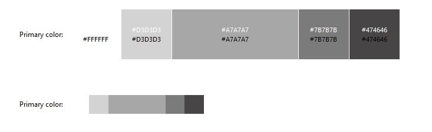
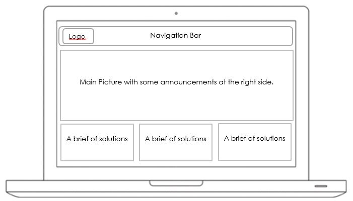
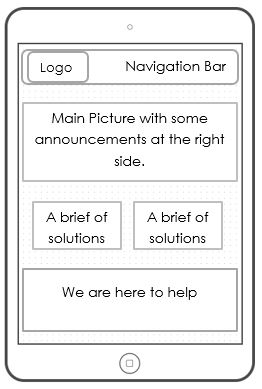
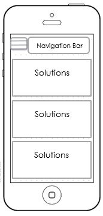

This website www.repostech.com has been built in order to provide information to my customers about the services I offer, these are CCTV systems, Alarm Systems, Networking, Access Systems, and Wireless Systems. In addition this site will contain tabs that will enable the customer to access to tutorials, blogs and information to contact me in case the want to hire my services.
The target audience for my website is to those who want to install or include
security systems within the wall of their house, offices, or companies.
Giving them a wide variety of technological system options to protect not only
their goods or possessions, but also to protect their personal integrity.
In addition to those who pursue learning security systems, and receive a basic
training of technological concepts.
Tecnical Description
Male business owner
Name: Esteban Raad Anton
Job: General Manager at Dilexsa
Demographics
Goals and tasks:
He is focused on the Technology field, especially in Software development. One of his concerns is to provide to offer their customer a good service quality. He also likes innovations and testing new technologies. He works as general manager, and also participates in project development, he likes the architectural design. He also supervise the effort of each person in the site.
Environment
He is currently looking for a solution to monitor his business and to have a control about what time the employees arrive. In addition he would like to protect his possession, is looking for an alarm system.
Quote
If you are going to do something, do it well done!
Female business owner
Name: Ana Cristina Jimenez
Job: General Manager at Portatiles
Demographics
Goals and tasks:
Cristina Jimenez has always been involved in tech stuffs, her company trades laptops, smartphones and tech gadgets. She is always looking to provide a good quality service to their customers, and loves to satisfy the needing from her customers.
Environment
She enjoys what is currently doing. She provide technical support for desktop computers and laptops as well.
Esteban Raad is a business man that has many properties, and He want to have them secure all of his installations. He wants to monitor from his iPad all of his properties. A friend that had previous gotten service from repostech told him to visit the website in www.repostech.com . Esteban finds that this company offers the service he is exactly looking for. He goes to CCTV section and check out all the option for his needing. He finds out that repostech can provide the service He is looking for.
Cristina Jimenez has 4 stores and she is pretty concerned about the marketing. She wants to know if the publicity is taking effect on the sales of her business. She asks to her friend Andres if He knows a way to handle with this situation. Andres recommends her a product that will show her how many people visit their stores, and also from the quantity of people that visit the locals, how many of them buy. Andres explains that it is a Video Analytics product. He advise her to visit repostech.com. Cristina visit the site and reads all the pros about vide analytics and finds out that repostech has the solution she has been looking for.
Home Page
The #FFFFF will be used for the background, the #D3D3D3 for navigation bar. The # A7A7A7 will be used as footer of the website. The #7B7B7B will placed as the as the line that is upper the footer.
I am going to use Century Gothic, The headers will have 16, 14 for tittles, and 12 for body text.
Navigation will be placed next to the logo name.
These are the frames for tablets, laptops, and smartphones.
Computer
Tablet
Smartphone
